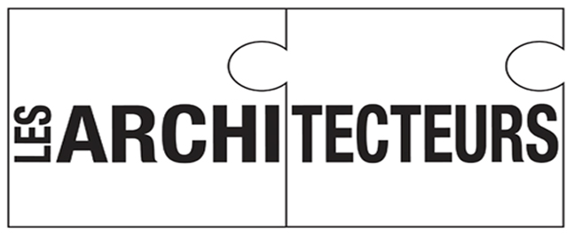

NOUS CONTACTER
1 · Dans un premier temps, par téléphone, nous définissons ensemble vos besoins.
2 · Lors d'une visite sur place nous étudions la faisabilité de votre projet en tenant compte des contraintes physiques et administratives.
3 · Nous élaborons un contrat stipulant le type de mission, les délais et honoraires. Si accord, nous vous faisons parvenir la mise au point de l'état actuel (avec relevé si nécessaire), un projet et un estimatif.
AMCJ ARCHITECTURE DESIGN
21, domaine de Kervillen II56470 La Trinité sur Mer, Bretagne
Tel : 09.51.98.13.27
amcj.architecture@gmail.com
A2C ARCHITECTEURS

http://www.architecteurs.fr